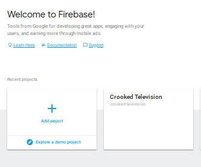
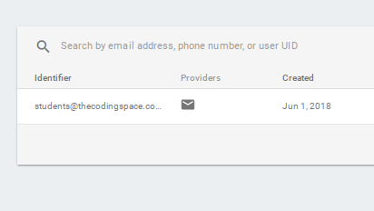

Build a Login Page with Firebase
In this project, you're going to make a login page using Firebase! When you're ready, head on over to Firebase and click "Get Started."
1. To use Firebase, you will need a Google account. If you have one already, you can log in with it. If you don't, ask a teacher to log you in with students@thecodingspace.com credentials.
2. In the Firebase console, you'll see an option to add a new project. Go ahead and add one!

3. Once you create your project, you'll see a number of options. Choose the one that allows you to add Firebase to your web app. Follow Firebase's instructions on how to add it to an HTML page.

4. In the Firebase console, click on your project and review the menu that appears on the left. Figure out how to view your current list of users. Then set up an email/password sign-in method.

5. In the HTML page that you added Firebase initialization code to, add an h1 tag that tells users a little bit about the page. Underneath that, add a button that says "Sign Up."
6. Next add input tags that will capture a user's email address and password.
7. Attach an event to the signup button that when clicked creates an account on Firebase with the given email address and password. See Firebase's authentication docs for instructions on how to do this.
8. Test what you have so far. Enter an email address and password into the input fields in your HTML page and click the signup button. Then revisit the Firebase console. Did the user list update with the email address you submitted? If so, great! Move on to step 9. If not, check the browser console (CTRL+SHIFT+J in Chrome or use the Inspect tool) for errors and troubleshoot.
9. Now you need some way to indicate to users that they are signed up. Read the Firebase docs and figure out how to tell if users have successfully signed up. If they have, hide the form, change the signup button so that it now says "Sign Out," and show a message welcoming them.
10. Signed in users will need a way to sign out. Search through the Firebase docs and find a way to sign users out. If a user signs out successfully, make the screen look the same as it did before signing up. (When testing this, make sure to use an email address that is not already in Firebase!)
11. What if the user wants to sign back in later? Create another button that says "Log In."
12. Search through the Firebase docs and figure out how to make it so that when the Login button is clicked, a user who already has an account is logged in. If this happens successfully, make the screen look the same way as it does when a user signs up successfully.
13. Sometimes Firebase will throw errors preventing the user from signing up or logging in. For instance, Firebase will not allow someone to sign up if the password is less than 6 characters. Check out the Firebase code that you've added to your HTML doc and determine how errors are handled. Display the error messages on your HTML page if they occur. In the example below, try signing up with a password that is 3 characters long.
14. Make it so that you only see the Signup and Login buttons when the page loads. Then when one button is clicked, show the form and hide the button that was not clicked. Make sure the first button click doesn't submit any data and just reveals the form.
15. Once a button is clicked and the form is showing, make it so that when the user clicks the login or signup button again, an attempt is made to log the user in or sign the user up, respectively.
16. What if the user didn't mean to click a button? Add in an option to close the form.
17. What if the user meant to click the signup button instead of the login button or vice versa? Add in a way to switch between the two sign-in types.
18. What if a user forgets their password? Read the Firebase docs and figure out how to add an option to reset the password. Make it appear only when the user clicks the login button.
19. Use CSS to make your page look more inviting. Add a background image or color, jazz up the buttons, find the perfect font - whatever looks good to you!